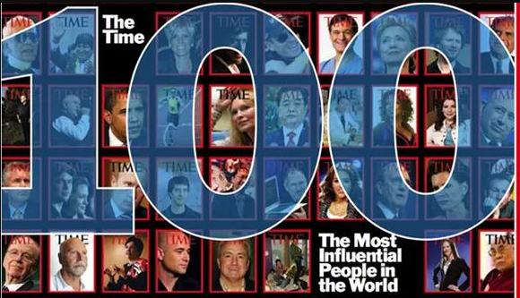
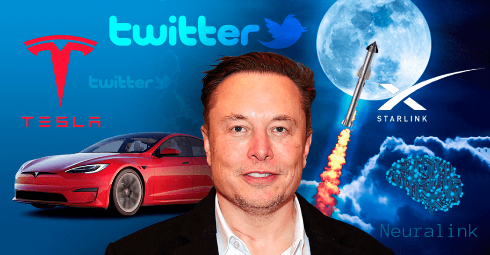
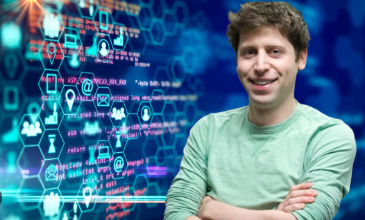

APLICACIONES WEB
Personas más influyentes en la tecnología

La revista Time publicó este jueves su lista de 100 personas más influyentes en el mundo, para el 2023, en la que no faltaron aquellos que se dedican al desarrollo tecnológico, ya sea en el campo de las redes sociales, los videojuegos o la obtención de energía limpia.
Entre ellos están:
Elon Musk

Biografía
Elon Reeve Musk nació en 1971 en Sudáfrica. Su madre es la modelo y dietista Maye Musk, y su padre, Errol Musk, un ingeniero electromecánico, a quien Elon ha descrito como "un ser humano terrible". Elon Reeve Musk es el mayor de los tres hijos de la familia, y es ciudadano de tres países: Sudáfrica, Canadá y Estados Unidos.
Musk pasó su infancia con la nariz metida en libros y computadoras. Fue un niño pequeño e introvertido, condenado al ostracismo por sus compañeros de escuela y regularmente golpeado por los grandulones de la clase. Pero en su adolescencia, él mismo creció lo suficiente y muy aceleradamente, así que pudo defenderse.
Musk se mudó a Silicon Valley en el verano de 1995. Se inscribió en un programa de doctorado en Física Aplicada en la Universidad de Stanford, pero se retiró después de solo dos días. Su hermano Kimball Musk, 15 meses más joven que Elon, acababa de graduarse de la Universidad de Queen con un título en finanzas, y se unió a él en California. La Internet temprana despegaba, y los hermanos decidieron lanzar una empresa startup a la cual llamaron Zip2. Era una especie de directorio de negocios en línea, equipado con mapas.
Magnate de los medios de comunicación, empresario y filántropo, Elon Musk es el fundador, CEO y CTO de SpaceX, cofundador de Tesla Motors y fundador de The Boring Company. Además, es cofundador de Neuralink, OpenAI y PayPal. Musk ha sido el principal impulsor del desarrollo del coche eléctrico, el cohete espacial Falcon 9 y el Hyperloop.
Sam Altman

Biografía
Sam Altman nació el 22 de abril de 1985, en Chicago, Illinois, Estados Unidos. Hijo de la dermatóloga Connie Gibstine, tiene un hermano llamado Jack. Diagnosticado con el síndrome de Asperger. Fue criado como judío y se declara abiertamente gay. Se crio en St. Louis, Missouri y tuvo su primera computadora a la edad de ocho años.
Hizo la secundaria en la John Burroughs School y cursó estudios de informática en la Universidad de Stanford hasta abandonar en 2005 esta prestigiosa Universidad para desarrollar a tiempo completo Loopt, una aplicación para telefonía móvil que indicaba a tus amigos la ubicación. En la universidad trabajó en el laboratorio de inteligencia artificial. En 2017, recibió un título honorífico de la Universidad de Waterloo.
Cofundó, con Elon Musk, el CEO de Tesla y SpaceX, una organización sin fines de lucro llamada OpenAI, cuyo objetivo es evitar que la inteligencia artificial elimine accidentalmente a la humanidad. Director ejecutivo de esta empresa de investigación dedicada a promover la inteligencia digital de manera responsable y beneficiosa para la humanidad garantizando sistemas altamente autónomos que superen a los humanos en el trabajo.
Empresario, inversor, programador y bloguero fue nombrado el principal inversor menor de 30 años por Forbes en 2015, y como uno de los "Mejores jóvenes emprendedores en tecnología" por BusinessWeek en 2008.
Durante la pandemia de COVID-19, financió y colaboró con el Proyecto Covalence, en apoyo de los investigadores para lanzar ensayos clínicos. En mayo de 2020, donó 250.000 dólares a American Bridge 21st century, un Super-PAC que apoyó al candidato presidencial demócrata Joe Biden.